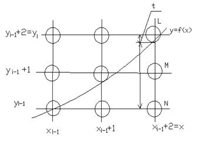

- Пусть кривая задана в виде y = f (x).
- На основании теоремы доказанной Ву и Рокнэ о том, что для любой функции f (x , y) = 0 заданной на интервале [a , b] и удовлетворяющей условиям:
знак не меняется и ее разложение в растр в любой точке может принимать одну из четырех форм (Рис. 40),

Рис. 40
при этом существует некоторая точка xÎ[ a , b ], такая, что случаи (1) и (4) не могут быть на интервале [ a , x ] не на интервале [ x , b ] одновременно.
Алгоритмы вывода отрезка и дуги окружности, разработанные Брезенхэмом, используют целочисленную арифметику, что является более привлекательным. Алгоритмы используют некоторый целочисленный параметр, пропорционального отклонения точки растра от заданной линии (прямой или дуги). Используя подход Брезенхема и теорему Ву и Рокнэ мы можем модифицировать алгоритм для вывода кривой, минимизируя некоторые вещественные вычисления алгоритма.

Рис. 41
Будем считать , что сделан i - 1 шаг для визуализации кривой. И требуется сделать i - 1 шаг, где xi =xi-1 + 2 (Рис.41).
Будем считать , что dyi / dxi £ 1, в другом случае рассуждения аналогичны.
Чтобы выполнить i - шаг из точек L , M , N необходимо выбрать наилучшее приближение к кривой. Очевидно ,если 1 ³ dy/dx ³1/, то выбираем L или M; и если 1/ ³ dy/dx ³0, то выбираем M или N.
Запишем выражение для s и t:
s = f ( x j-1 +2 ) -
y j-1
t
= y j-1+2 -f ( x j-1 +2 )
D j= s-t = f ( x j-1 +2 ) - y j-1- y j-1-2 + f ( x j-1 +2 ) = 2 f ( x j-1 +2 ) -2 y j-1-2
заменим i на i+1 , следовательно
D j+1= 2 f ( x j +2 ) -2 y j-2
вычтем из D j+1 D j , следовательно
D j+1-D j = 2 f ( x j + 2 ) -2 y j - 2 -2 f ( x j-1+ 2 ) -2 y j-1+2
D j+1= D j+ 2f (xj+2) - 2( y j-y j-1 ) - 2f ( x j-1 + 2 )
D j+1= D j+2 f j+1 - 2( y j
- y j-1 ) , где
f j+1 - 2( y j
- y j-1 ) , где
f j+1= f (xj+2)
- f (xj+2) = f (xj+1) - f (xj)
Тогда из точек L и M если D j ³1 выбираем точку L.
y j= y j-1+2 Þ
D j+1= D j+2f
j+1 - 4
если D j £ 1 выбираем точку M, y
j= y j-1+1 Þ D j+1=
D j+2f
j+1 - 2 или перепишем:
где D1=2f 1
– 3.
Для второй группы случаев аналогично из точек N и M:
где D1=2f 1
– 1.
Для различия случаев 2 и 3 введем булевую переменную
Тогда, для точек L и M - случай 2 выбираем если B=0, случай 3,если B=1 .
Для точек M и N случай 2 выбираем если B=0, случай 3 если B=1 .
Таким образом, мы получили итеративный способ вычисления d j+1 по предыдущему значению dj и выбора между точками L,M,N. В алгоритме минимизировано количество вычислений вещественных значений. Используется три сложения и одно умножение.